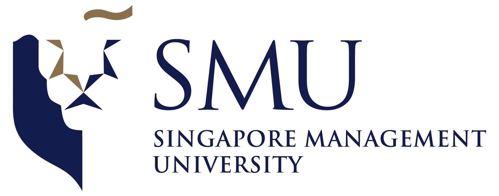

📖 Biography
🙋♂️ I am currently a visiting PhD student at Singapore Management University under the supervision of Prof. Guansong Pang, and belong to the Machine Learning & Applications (MaLA) Lab at SMU. I am pursuing my PhD degree at University of Wollongong, advised by Prof. Jun Shen and Prof. Jun Yan. Previously, I received my Master's degree at Xidian University in 2023.
My research interests lie in using Deep Learning to build Trustworthy AI Systems. Currently, I focus on Efficient/Faithful Agentic Reasoning (Attribution & Intervention) and Generalized Anomaly/Risk Detection. Besides, I also explore following areas:
- 🎨 Visual Representation Learning
- 🚨 Out-of-Distribution Generalization
- 🍟 Multimodal Large Language Model
- 🤖 Lifelong Learning of Large Language Model
😄 I'm excited to work with colleagues in the Machine Learning & Applications (MaLA) Lab at Singapore Management University, focusing on Agentic Reasoning and Anomaly Detection for facilitating Trustworthy AI.
📧 Recent News
- [New!] 2026/05: We recently released a practical few-shot anomaly detection project IDEAL (Intrinsic Deviation Learning for Discriminative FSAD). You're welcome to star and follow the GitHub repository.
- 2026/05: I released a research proposal Privacy-Enhancing Federated Multi-Agent Systems on promoting privacy in multi-agent systems.
- 2026/05: I am giving an invited talk "Deep Anomaly Detection in Agricultural Images" at Yazhouwan National Laboratory.
- 2026/05: One paper on federated prototype learning is accepted to ICML 2026 (26.6%, 6352/23918), see you Seoul!
- 2026/02: One paper on cryo-electron segmentation is accepted to International Journal of Computer Vision (IJCV).
- 2026/02: One paper on feature decoupling is accepted to CVPR 2026 (25.42%, 4090/16092).
- 2026/01: One paper on fake news detection is accepted to WebConf (WWW) 2026 (20.1%, 676/3370).
- 2026/01: One paper on federated learning is accepted to KDD Singapore Symposium 2026 (Oral).
- 2025/12: As a Visiting Student (PhD) at SMU, supervised by Prof. Guansong Pang.
- 2025/11: One paper on zero-shot learning is accepted to AAAI 2026 (Oral) (17.6%, 4167/23680).
- 2025/09: I am honored to receive the ICCV 2025 Student Travel Award.
- 2025/08: One paper on visual prompt tuning is accepted to IEEE Transactions on Multimedia.
- 2025/08: One paper on long-term forecasting is accepted to IEEE Transactions on Geoscience and Remote Sensing.
- 2025/07: I am honored to receive the KDD 2025 Student Travel Award.
- 2025/06: One paper on federated learning with diffusion model is accepted to ICCV 2025 (24%, 2698/11239).
- 2025/05: One paper on semantic-aware federated learning is accepted to KDD 2025 (Oral) (18.4%, 365/1988).
- 2025/05: One paper on heterogeneous federated learning is accepted to ICWS 2025 (23.8%, 64/346).
- 2024/02: Arrived at the Wollonong campus of UOW, officially beginning my research career.
- 2023/07: Completed Master's degree from XDU and joined UOW SCIT as a Research PhD.
Services and Awards
- Program Committee (Selected): ICCV, CVPR, KDD, ICML, NeurIPS, ECCV, AAAI, ICLR
- Journal Reviewer (Selected): IEEE TMM, IEEE TNNLS, IEEE TIP, IEEE TPAMI
- ICCV 2025 Student Travel Award, Hawaii 2025
- KDD 2025 Student Travel Award, Toronto 2025
- ICML 2026 Silver Reviewer, Seoul, South Korea 2026
- AAAI 2026 Outstanding Program Committee, Singapore 2026
- CVPR 2025 Outstanding Reviewer, Nashville 2025
